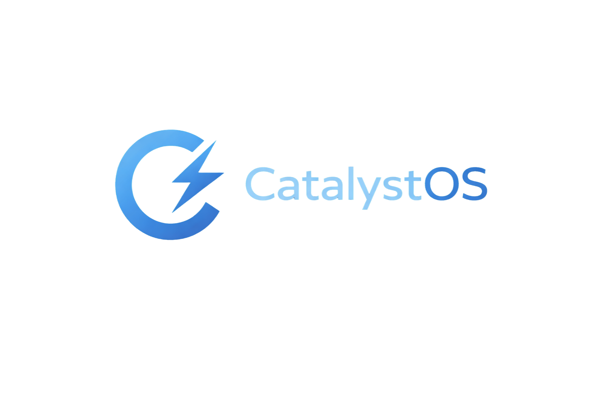

Privacy
Lean defaults and transparent tooling keep your system quiet and predictable.
Accelerate your system.
CatalystOS focuses on privacy, stability, and performance with a clean, fast base you can trust.

Lean defaults and transparent tooling keep your system quiet and predictable.
Built on OpenBSD, known for its strong security and stability across long-lived systems and desktops.
Trimmed services and tuned workflows to keep machines responsive.